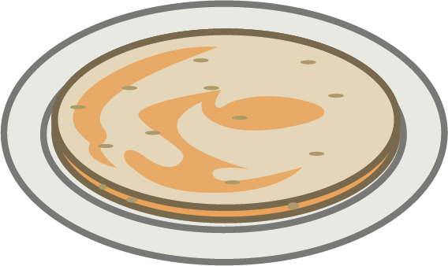

蔥油餅 SCALLION PANCAKE
Pancake is probably not the best way to translate this dish. As the texture of the scallion pancake is more similar to that of pastry, especially since this dish is made with a similar technique that of a croissant or puff pastry. This buttery pastry is also filled with chives making this dish super savoury and delicious. This is a common street and snack food since it is not just cheap but also literally everywhere in Taiwan.